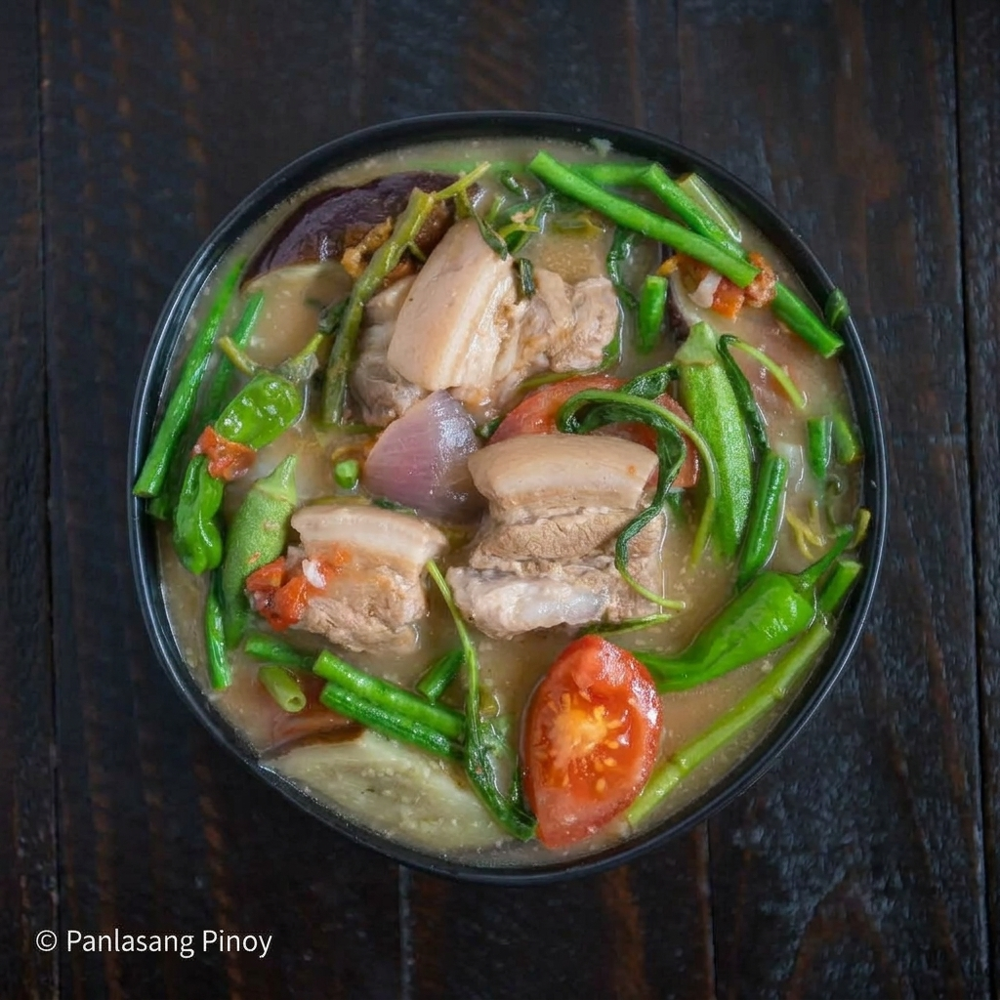

Pork Sinigang

Pork Sinigang is a popular Filipino soup known
for its sour and savory flavor. It is commonly
cooked with pork, vegetables, and tamarind.
Ingredients
- 1 kg pork belly or pork ribs
- 1 packet sinigang mix or fresh tamarind
- 2 tomatoes, sliced
- 1 onion, quartered
- 1 radish, sliced
- 1 eggplant, sliced
- 6 pieces okra
- 1 bunch kangkong
- 6 cups water
- Fish sauce to taste
Cooking Instructions
- Boil the pork in water until tender.
- Add the onions and tomatoes.
- Add the radish, eggplant, and okra.
- Add the sinigang mix or tamarind.
- Season with fish sauce.
- Add kangkong and cook briefly.
- Serve hot with steamed rice.
Pork Sinigang Video Tutorial
Video by Panlasang Pinoy.
Back to Homepage